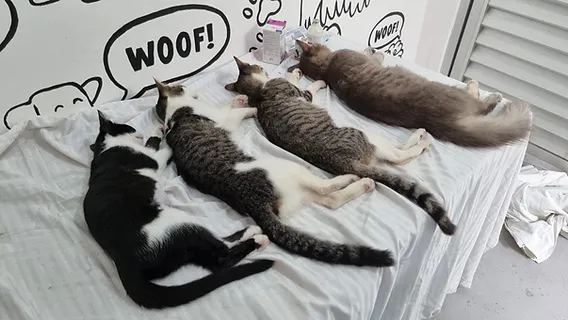
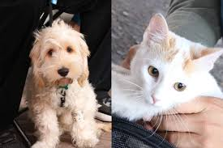
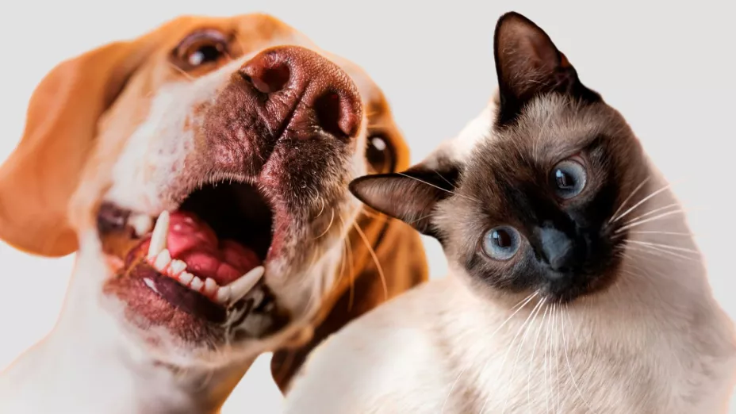
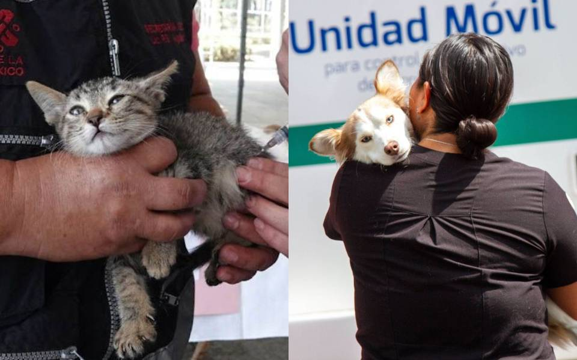
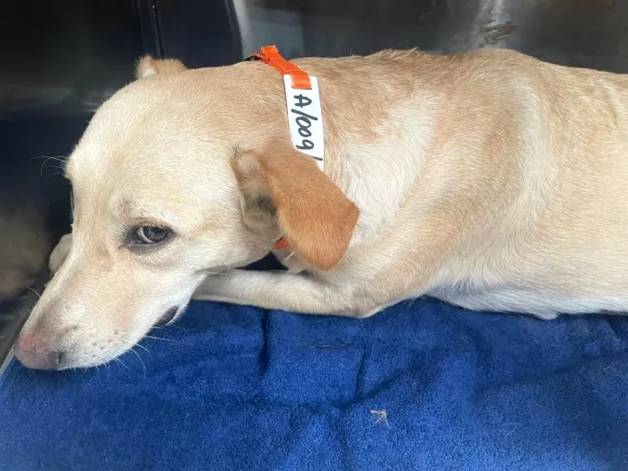

Objetivo del Proyecto
Desarrollar un proyecto enfocado en la concientización sobre la vacunación y esterilización de mascotas en nuestra comunidad.

Solicitamos su Apoyo
Nos gustaría solicitar su apoyo para llevar a cabo campañas de propaganda para futuras jornadas de vacunación y esterilización.

Colaboración
Su participación y conocimientos en salud pública serían un gran aporte para la realización de este proyecto.

Plan de Acción
- Realizar campañas de propaganda.
- Crear una página web y una red social en Facebook.
- Proporcionar información sobre el cuidado y bienestar de las mascotas.
- Recursos educativos sobre la importancia de la vacunación y esterilización.

Enlaces de Interés
- Esterilización de Animales de Compañía - gob.mx
- Esterilización Quirúrgica de Perros y Gatos - gob.mx
- Importancia de Desparasitar, Vacunar y Esterilizar a tus Animales - Fundación Huella Animal
Contacto
Centro de Salud Dr. J. de Jesús Delgadillo Araujo
Dirección: Avenida División del Norte 107, 47420 Lagos de Moreno, Jalisco
Teléfono: 4741756709
